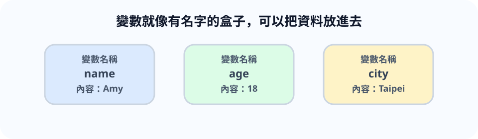
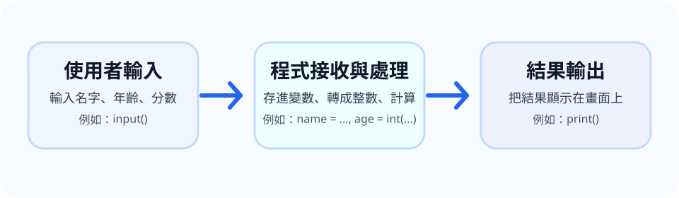
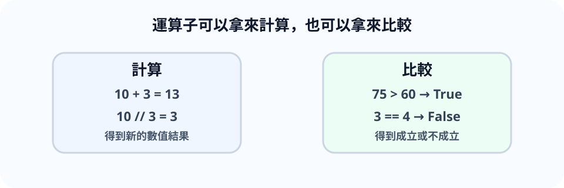
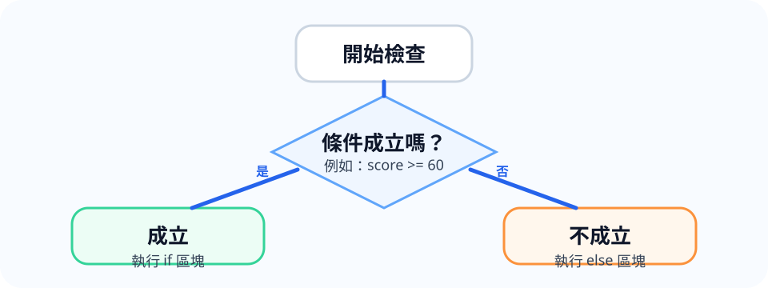
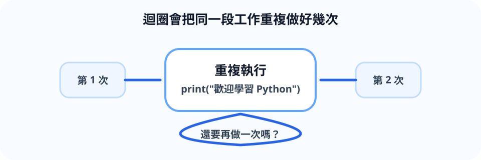
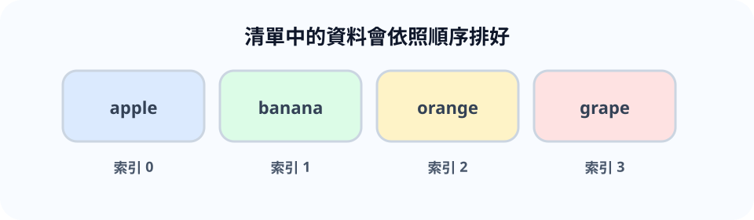
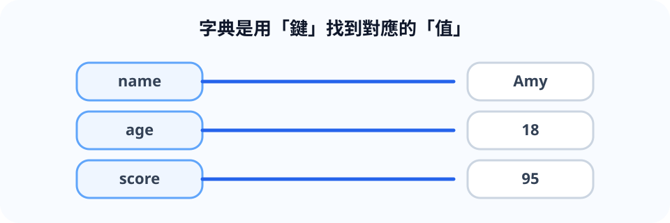
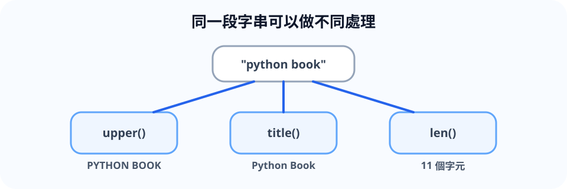
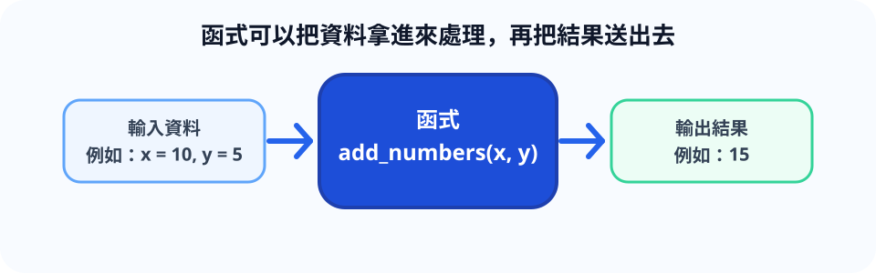

歡迎翻開這本《Python 程式設計入門：從 0 到函式》。
這是一本為初學者準備的 Python 入門書，特別適合高中生、大學生、非資訊背景的學習者，以及第一次接觸程式設計的人。
本書會用白話、一步一步的方式，帶你從最基本的觀念開始學起。你不需要先有程式基礎，只要願意跟著章節慢慢練習，就能逐漸看懂 Python 的寫法，並寫出自己的小程式。
全書內容從 Python 簡介開始，接著介紹變數、輸入與輸出、運算子、條件判斷、迴圈、清單、字典、字串，最後走到函式。這些都是初學 Python 時最重要的核心基礎。
每一章都會依照固定節奏安排內容，包括本章重點、概念說明、範例程式、程式解說、常見錯誤、練習題和小結。你可以依照順序閱讀，也可以在做練習時回頭查找前面的內容。
如果你是第一次學程式，建議你不要急著往後翻。先把每一章的範例親手打過一次，再試著完成後面的練習題，學習效果通常會更好。
希望這本書能陪你把 Python 的基礎打穩，讓你從看得懂程式，到慢慢學會自己寫程式。
Python 是一種語法清楚、容易上手的程式語言，很適合初學者學習。
print("Hello, Python!")這行程式會把文字顯示在畫面上。
print("J5")解析：只要把原本輸出的文字改成自己的名字即可，重點是熟悉
print() 的基本用法。
print("大家好")
print("我正在學 Python")解析：連續寫兩個
print()，畫面就會出現兩行不同的文字。
參考答案：Python 可以用來做資料分析、網站開發、自動化工作、遊戲程式和教學練習。
解析：這一題沒有唯一答案，重點是知道 Python 的用途很多，而且很適合初學者入門。
本章先建立對 Python 的第一印象，後續會逐步學更多語法。
變數就像一個有名字的盒子，可以把資料放進去，之後再取出來使用。

name = "Amy"
age = 18
print(name)
print(age)name 儲存文字，age
儲存整數，兩者都是變數。
city 變數。score 變數並輸出。city = "Taipei"
print(city)解析：先建立變數，再把城市名稱放進去即可。
score = 100
print(score)解析：這題是練習把數字存進變數，並用 print()
看結果。
name = "Amy"
print(name)
name = "Jack"
print(name)解析：同一個變數可以重新指定新的值，後面印出的結果就會跟著改變。
學會變數後，就能讓程式記住資料並重複使用。
print() 顯示文字、數字與變數input() 接收使用者輸入前面幾章我們已經學過變數，也看過程式可以把結果顯示在畫面上。從這一章開始，我們會讓程式更有互動感。
所謂的輸出，就是程式把訊息顯示給使用者看。例如顯示歡迎文字、計算結果、提醒訊息，這些都屬於輸出。
所謂的輸入，就是讓使用者把資料送進程式裡。例如輸入名字、年齡、分數，讓程式拿來做後續處理。
你可以把它想成一個很簡單的流程：
這種流程看起來很基本，但幾乎所有互動式程式都會用到。像是登入系統、點餐系統、成績查詢、計算機，背後都離不開輸入與輸出。
在 Python 中，最常用的兩個工具就是：
print()：負責輸出內容input()：負責接收輸入內容只要先把這兩個工具學好，後面很多章節都會變得更好懂。

print("歡迎來到 Python 世界！")
print("今天開始學寫程式")student_name = "小美"
score = 95
print("學生姓名：", student_name)
print("考試分數：", score)name = input("請輸入你的名字：")
print("你好，" + name)age_text = input("請輸入你的年齡：")
age = int(age_text)
next_year_age = age + 1
print("你今年", age, "歲")
print("明年你會", next_year_age, "歲")print()print() 的用途很直接，就是把內容顯示在畫面上。
在範例 1 中，我們把兩句文字直接放進 print()
裡，所以程式執行後就會一行一行顯示出來。
在範例 2 中，我們不是直接印死文字，而是先把資料放進變數，再把變數內容輸出。這樣的好處是，之後只要改變變數的值，輸出的結果也會跟著改變。
你也可以發現，print()
不只能印文字，也能印數字、變數，甚至一次印多個內容。對初學者來說，用逗號把資料分開是很方便的寫法。
input()input()
會先在畫面上顯示提示訊息，然後等待使用者輸入內容。
例如這一行：
name = input("請輸入你的名字：")它的意思是： - 先顯示「請輸入你的名字：」 - 等待使用者輸入 -
把輸入結果存進 name 變數
接著我們再用 print()
把問候語顯示出來。這就是一個最基本的互動程式。
這是初學者很常卡住的地方。
雖然你在鍵盤輸入的是 18、20、35，看起來像數字，但
input()
接收到的內容，預設會先當成文字來處理。
所以如果你想拿它做加法、減法，通常要先轉成整數。這就是範例 4 中
int(age_text) 的用途。
age_text = input("請輸入你的年齡：")
age = int(age_text)第一行拿到的是文字。 第二行才把文字變成整數。
如果少了這一步，後面在做運算時就容易出錯。
錯誤寫法：
input("請輸入你的名字：")
print(name)這樣會有問題，因為你沒有把輸入結果存到
name，後面卻直接拿 name 來用。
正確寫法：
name = input("請輸入你的名字：")
print(name)錯誤寫法：
age = input("請輸入年齡：")
print(age + 1)這裡的 age 還是文字，所以會出現型態不符合的錯誤。
正確寫法：
age = int(input("請輸入年齡："))
print(age + 1)錯誤寫法：
print(歡迎來學 Python)Python 會看不懂這串內容是什麼。
正確寫法：
print("歡迎來學 Python")input()
讓使用者輸入姓名，接著輸出「歡迎你，某某某」。input()
讓使用者輸入年齡，並顯示「明年你會幾歲」。print("歡迎來學 Python")
print("我的名字是 J5")解析：這題主要是練習最基本的輸出，把兩句訊息依序顯示出來。
name = input("請輸入你的姓名：")
print("歡迎你，" + name)解析：用 input()
接收使用者輸入，再把變數內容串接到問候語中。
age = int(input("請輸入你的年齡："))
print("明年你會", age + 1, "歲")解析：因為年齡要做加法，所以要先把輸入文字轉成整數。
num1 = int(input("請輸入第一個整數："))
num2 = int(input("請輸入第二個整數："))
print("總和是：", num1 + num2)解析：這題把輸入、轉型、計算和輸出結合在一起，是很好的綜合練習。
這一章學到的內容很重要，因為它是程式與使用者互動的第一步。
你已經學會： - 用 print() 顯示訊息 - 用
input() 接收資料 - 把輸入內容存進變數 -
在需要計算時，先把文字轉成整數
只要把這些基本觀念練熟，後面在學條件判斷、迴圈和函式時，你就能更自然地寫出有互動的程式。
在日常生活中，我們常常會做很多比較與計算。
例如： - 今天買東西總共多少錢？ - 考試分數有沒有及格？ - 年齡是不是超過 18 歲？
在 Python 裡，這些動作都要靠運算子來完成。
運算子可以把它想成「做事的符號」。 有些符號負責計算，像是加法、減法；有些符號負責比較，像是大於、小於、是否相等。
如果沒有運算子，程式就很難處理資料，也無法根據結果做判斷。
這一章會先從最常見的幾種開始學：
這些內容看起來不難，但非常重要。後面在寫 if 判斷、迴圈條件時，幾乎都會用到。

x = 10
y = 3
print("加法：", x + y)
print("減法：", x - y)
print("乘法：", x * y)
print("除法：", x / y)apples = 10
people = 3
print("每人可分到：", apples // people, "顆")
print("剩下：", apples % people, "顆")score = 75
print(score > 60)
print(score < 60)
print(score == 75)age = 20
is_adult = age >= 18
print("是否成年：", is_adult)先來看最常見的數學運算：
+：加法-：減法*：乘法/：除法//：整除%：取餘數範例 1 中的 x + y，意思就是把兩個數字加起來。
如果 x = 10、y = 3，那麼： -
x + y 會得到 13 - x - y 會得到 7 -
x * y 會得到 30 - x / y 會得到 3.333333…
這裡要特別注意，除法 / 的結果通常會是小數。
有時候我們不是只想知道除法結果，而是想知道： - 一組東西平均分後，每人拿到幾個 - 最後會剩下多少
這時就會用到： - //：整除，只保留整數部分 -
%：餘數
例如 10 顆蘋果分給 3 個人： - 10 // 3 結果是 3 -
10 % 3 結果是 1
這種寫法在分組、計算星期、判斷奇偶數時都很常見。
除了計算，程式也很常需要做比較。
常見的比較運算子有： - >：大於 -
<：小於 - >=：大於等於 -
<=：小於等於 - ==：是否相等 -
!=：是否不相等
比較後的結果只會有兩種： - True：表示成立 -
False：表示不成立
例如：
print(8 > 5)
print(3 == 4)第一行會得到 True，第二行會得到 False。
這樣的結果在下一章的 if 判斷會非常重要，因為 if 就是看條件是真還是假，再決定程式要怎麼做。
你不一定每次都要直接印出結果，也可以先存進變數。
像這一行：
is_adult = age >= 18它的意思是把「是否成年」的判斷結果先存起來。 如果年齡大於等於
18，is_adult 就會是 True。
這樣的寫法會讓程式更容易閱讀。
= 和 ==
混在一起這是初學者最常犯的錯。
= 是指定值給變數== 才是比較兩邊是否相等錯誤觀念： 以為 score = 60 是在比較，其實不是，它是在把
60 放進 score。
很多人看到 10 / 2 得到 5 沒問題，就以為除法都會是整數。
但其實 / 在 Python 裡通常會保留成小數格式。
如果你只想要整數部分，應該用 //。
例如下面這種寫法就容易出錯：
age = 18
print("我的年齡是：" + age)因為前面是文字，後面是數字，型態不同。
比較簡單的寫法是：
age = 18
print("我的年齡是：", age)score 變數，判斷它是否大於等於 60。x = 12
y = 5
print(x + y)
print(x - y)
print(x * y)解析：這題是練習最基本的算術運算子。
print(17 // 4)
print(17 % 4)解析：// 會算整除結果，%
會算餘數，所以答案分別是 4 和 1。
score = 70
print(score >= 60)解析：如果分數大於等於 60，結果就會是 True。
a = 8
b = 8
print(a == b)解析：== 是比較是否相等，不是指定值。
參考答案： - 算每人分到幾顆要用 // - 算剩下幾顆要用
%
解析：這題是在理解整除與餘數的生活應用。
這一章我們學到，運算子是 Python 中非常基礎但非常重要的工具。
你已經認識了： - 如何用運算子做加減乘除 - 如何用 // 和
% 處理平均分配與餘數 - 如何用比較運算子判斷大小與是否相等 -
比較結果會得到 True 或 False
接下來進入條件判斷時，你就會看到這些運算子如何真正派上用場。
if、elif、else前一章我們學到比較運算子，像是大於、小於、等於。這些比較做完之後，會得到
True 或 False。
那麼，程式拿到這個結果之後，可以做什麼呢？
答案就是：條件判斷。
所謂條件判斷，就是讓程式根據「條件有沒有成立」，決定接下來要執行哪一段程式。
例如： - 如果分數及格，就顯示「通過」 - 如果今天下雨，就帶雨傘 - 如果年齡超過 18 歲，就顯示「你已成年」
這些都是生活中很常見的判斷。
在 Python 裡，最常使用的條件判斷語法有三個：
if：如果條件成立，就執行elif：如果前面的條件不成立，再檢查這個條件else：如果前面的條件都不成立，就執行這裡學會這一章之後，你的程式就不再只是單純從上往下執行，而是能夠根據不同情況做出不同反應。

score = 85
if score >= 60:
print("及格")
else:
print("不及格")age = 20
if age >= 18:
print("你已經成年")
else:
print("你還未成年")elif
判斷成績等級score = 78
if score >= 90:
print("A")
elif score >= 80:
print("B")
elif score >= 70:
print("C")
else:
print("再加油")input()
使用number = int(input("請輸入一個整數："))
if number > 0:
print("這是正數")
elif number < 0:
print("這是負數")
else:
print("這是 0")if 的基本用法最基本的條件判斷就是 if。
if score >= 60:
print("及格")它的意思是： 如果 score >= 60
這個條件成立，就執行下面縮排的程式。
這裡要注意，if 後面一定要接條件，最後還要加上冒號
:。
else 的用途如果你希望條件不成立時，也要做某件事，就可以加上
else。
例如：
if score >= 60:
print("及格")
else:
print("不及格")這段程式表示： - 條件成立時，顯示「及格」 - 條件不成立時，顯示「不及格」
所以 else 可以理解成「其他情況都走這裡」。
elif 的用途有時候情況不只兩種，而是三種以上，這時就很適合用
elif。
例如成績判斷： - 90 分以上是 A - 80 分以上是 B - 70 分以上是 C - 其他就再加油
這時如果只用 if 和 else
就不太夠，所以可以在中間加入 elif。
elif
可以有很多個，會從上到下依序檢查。一旦有一個條件成立，就會執行對應內容，後面的條件就不再繼續判斷。
Python 跟很多程式語言不一樣，它非常依賴縮排來表示程式的區塊。
例如：
if score >= 60:
print("及格")print("及格") 前面有縮排，表示它屬於 if
這個條件之下。
如果縮排不正確，Python 就會報錯，或讓程式邏輯跟你想的不一樣。
一般常見做法是使用 4 個空白作為一層縮排。
:錯誤寫法：
if score >= 60
print("及格")if、elif、else
的行尾都需要冒號。
正確寫法：
if score >= 60:
print("及格")錯誤寫法：
if score >= 60:
print("及格")這樣 Python 會看不懂哪一段程式屬於 if。
= 寫成 ==
或反過來在條件判斷中，應該使用 == 來比較是否相等。
例如：
if score == 100:
print("滿分")這裡的 == 才是比較，不是指定值。
age 變數，判斷是否已成年。temperature 變數，如果大於 30
就顯示「天氣很熱」。score 變數，依照分數輸出 A、B、C
或「再加油」。input() 讓使用者輸入一個整數，判斷它是正數、負數還是
0。age = 20
if age >= 18:
print("已成年")
else:
print("未成年")解析：這題是最基本的 if 和 else 練習。
temperature = 32
if temperature > 30:
print("天氣很熱")解析：條件成立時才會執行縮排中的內容。
score = 85
if score >= 90:
print("A")
elif score >= 80:
print("B")
elif score >= 70:
print("C")
else:
print("再加油")解析：這題是在練習多條件判斷。
number = int(input("請輸入整數："))
if number > 0:
print("正數")
elif number < 0:
print("負數")
else:
print("0")解析：先輸入，再判斷不同情況，是很常見的寫法。
參考答案：登入程式可以用條件判斷檢查帳號是否正確、密碼是否正確、是否登入成功。
解析：這題重點不是唯一答案，而是理解條件判斷在真實系統裡很常用。
這一章你已經學會了條件判斷的基本觀念。
你現在知道： - if 用來處理「如果成立就執行」 -
else 用來處理「其他情況」 - elif
用來處理多種不同條件 - 條件判斷常常搭配比較運算子一起使用 - Python
的縮排不能亂寫
接下來學迴圈時，你會進一步看到程式如何重複執行同一段工作。
for 迴圈while 迴圈在寫程式時，我們常常會遇到一種情況：同一件事要做好幾次。
例如： - 印出 1 到 10 - 重複顯示歡迎訊息 5 次 - 讓使用者一直輸入，直到輸入正確內容為止
如果每次都手動寫很多行
print()，不但麻煩，也很容易出錯。
這時候就需要用到迴圈。
迴圈的意思很簡單，就是讓一段程式重複執行。 你可以把它想成：「請這段程式再做一次、再做一次，直到符合停止條件為止。」
在 Python 裡，初學者最常接觸到兩種迴圈：
for：適合已經知道要重複幾次的情況while：適合還不確定要重複幾次，要看條件是否成立的情況這一章會帶你一步一步認識這兩種寫法。

for 印出 0
到 4for i in range(5):
print(i)for
重複顯示訊息for i in range(3):
print("歡迎學習 Python")while
印出 1 到 5count = 1
while count <= 5:
print(count)
count = count + 1number = 5
while number > 0:
print(number)
number = number - 1
print("時間到！")for 迴圈的基本概念如果你已經知道某段程式要重複幾次，for 會很好用。
先看這段：
for i in range(5):
print(i)這裡的意思是： - range(5) 會產生 0、1、2、3、4 -
每次執行迴圈時，i 會依序拿到其中一個值 - 然後把
i 印出來
所以最後畫面上會看到：
0
1
2
3
4range() 的用法range() 在 for 迴圈裡非常常見。
例如： - range(5) 代表 0 到 4 - range(1, 6)
代表 1 到 5
很多初學者會以為 range(5) 會包含
5，但其實不會包含最後那個數字。
例如：
for i in range(1, 6):
print(i)這樣才會印出 1 到 5。
while 迴圈的基本概念如果你不知道程式要重複幾次，而是要看某個條件是否成立，就可以用
while。
例如：
count = 1
while count <= 5:
print(count)
count = count + 1這段程式的意思是： - 只要 count <= 5 成立，就持續執行
- 每次執行完後，把 count 加 1 - 當 count 變成
6 時，條件不成立，迴圈就停止
在 while
迴圈裡，很重要的一件事就是：條件中的變數要改變。
如果你忘記更新，程式就可能永遠不會停下來，這種情況叫做無限迴圈。
例如下面這種寫法就有問題：
count = 1
while count <= 5:
print(count)因為 count 一直都是
1，條件永遠成立，所以程式會一直重複下去。
range() 的範圍初學者很常把 range(5) 誤解成 1 到 5。
其實它是從 0 開始，所以結果會是 0、1、2、3、4。
while
內的變數這是最常見的錯誤之一。
如果條件永遠成立，程式就會一直跑下去，不會自動停止。
for 和 while
底下要重複執行的程式，一定要有正確縮排。
例如：
for i in range(3):
print(i)如果 print(i) 沒有縮排，就不會屬於迴圈的一部分。
for 迴圈印出 1 到 10。for 迴圈重複輸出「我正在學 Python」5 次。while 迴圈印出 1 到 5。for？什麼情況比較適合用
while？for i in range(1, 11):
print(i)解析：要印出 1 到 10，可以用 range(1, 11)。
for i in range(5):
print("我正在學 Python")解析：這題重點是固定次數重複，適合用 for。
count = 1
while count <= 5:
print(count)
count = count + 1解析：使用 while
時別忘了更新變數，不然會變成無限迴圈。
number = 10
while number >= 1:
print(number)
number = number - 1
print("結束")解析：這題是 while 的經典練習，條件不成立時就會停止。
參考答案： - 已知重複次數時，比較適合用 for -
要依條件決定重複多久時，比較適合用 while
解析：這是兩種迴圈最重要的差別。
這一章你已經學會 Python 中兩種重要的迴圈。
你現在知道： - 迴圈可以讓程式重複執行工作 - for
適合用在已知次數的重複 - while 適合用在看條件是否成立的重複
- 使用 while 時要特別注意變數更新 - range()
不會包含最後一個數字
學會迴圈之後，你的程式就能更有效率地處理重複任務。
接下來的清單章節，你會學到怎麼把很多筆相關資料放在一起管理，讓迴圈能更方便地一次處理多個內容。
在前面的章節裡，我們常常把一筆資料存進一個變數，例如名字、年齡或分數。
但是如果今天不是只有一筆資料，而是很多筆同類型的資料呢？
例如： - 三種水果名稱 - 五位同學的分數 - 一週七天的名字
如果每一筆資料都開一個變數，會變得很麻煩，也不好管理。
這時候就可以使用 清單（List）。
清單可以把多筆資料放在同一個變數裡，而且資料會按照順序排好。你可以把它想成一個有順序的清單，裡面一格一格放著不同內容。
在 Python 中，List 會用中括號 []
來表示，元素之間用逗號隔開。

fruits = ["apple", "banana", "orange"]
print(fruits[0])
print(fruits[1])colors = ["red", "blue", "green"]
colors[1] = "yellow"
print(colors)numbers = [10, 20, 30]
numbers.append(40)
print(numbers)fruits = ["apple", "banana", "orange"]
fruits.remove("banana")
print(fruits)students = ["小明", "小美", "阿華"]
print(len(students))names = ["小明", "小美", "阿華"]
for name in names:
print(name)建立清單很簡單，只要把資料放在中括號裡面即可。
fruits = ["apple", "banana", "orange"]這表示 fruits 裡面有三個元素，分別是
apple、banana、orange。
清單裡的每一個元素，都有自己的位置。 這個位置叫做索引。
在 Python 中，索引是從 0 開始算的，不是從 1 開始。
所以： - fruits[0] 是第一個元素 - fruits[1]
是第二個元素 - fruits[2] 是第三個元素
這是初學者很容易搞混的地方，一定要特別記住。
清單裡的資料是可以改的。
例如：
colors = ["red", "blue", "green"]
colors[1] = "yellow"這表示把原本第二個元素 blue 改成
yellow。
修改之後，整個清單就會變成：
["red", "yellow", "green"]如果你想在清單最後面加入一個新元素，可以使用
append()。
numbers = [10, 20, 30]
numbers.append(40)這樣 40 就會被加到最後面。
如果你想刪除清單中的某個元素，可以使用 remove()。
fruits = ["apple", "banana", "orange"]
fruits.remove("banana")這樣 banana 就會從清單中被移除。
如果你想知道清單裡有幾筆資料，可以使用 len()。
students = ["小明", "小美", "阿華"]
print(len(students))這裡的 len(students) 會告訴你清單裡總共有幾個元素。
當清單裡有很多資料時，一個一個手動寫出來很不方便。
所以我們通常會搭配 for
迴圈，把清單裡的每個元素依序取出來。
for name in names:
print(name)這段程式會把 names 裡的每個名字都印出來。
這種寫法很常見，之後你會經常使用。
很多初學者看到第一個元素時，會直覺寫成 fruits[1]。
但在 Python 裡，第一個元素應該是 fruits[0]。
如果清單只有三個元素，你卻去讀
fruits[5]，程式就會報錯。
所以在讀取資料前，要先知道清單裡到底有幾個元素。
append 寫錯加入新元素時要寫成：
numbers.append(40)不要漏掉括號，也不要把方法名稱拼錯。
如果你要刪除的內容根本不在清單裡，程式就會出錯。
例如清單裡沒有 grape，卻寫：
fruits.remove("grape")這樣 Python 就找不到要刪除的資料。
append() 加入三個資料。for
迴圈把每個名字印出來。drinks = ["tea", "coffee", "juice"]
print(drinks[0])解析：第一個元素的索引是 0，不是 1。
numbers = [10, 20, 30]
numbers[1] = 99
print(numbers)解析：用索引可以直接修改清單中的資料。
items = []
items.append("apple")
items.append("banana")
items.append("orange")
print(items)解析：空清單也可以慢慢加入資料。
fruits = ["apple", "banana", "orange"]
fruits.remove("banana")
print(fruits)解析：remove() 可以刪除指定內容。
names = ["小明", "小美", "阿華"]
print(len(names))
for name in names:
print(name)解析：len() 可以先看有幾筆資料，for
迴圈則可以把每個元素依序取出來。
參考答案：因為清單可以把多個同類資料放在一起，比一個一個變數更好整理，也更方便重複處理。
解析：這就是清單最主要的用途。
這一章你已經學會了清單的基本概念。
你現在知道： - 清單可以一次存放多筆資料 -
清單中的元素有順序，也有索引 - Python 的索引從 0 開始 -
可以修改元素，也可以用 append() 加入資料 - 可以用
remove() 刪除資料 - 可以用 len()
查看有幾筆資料 - 清單常常會搭配 for 迴圈一起使用
學會清單之後，你就更能有效管理多筆相關資料。
前一章我們學到清單，知道它適合拿來存放一組有順序的資料。
但是有些資料，不只是單純排成一列，而是每一筆資料都有「欄位名稱」。
例如一位學生的資料可能有： - 姓名 - 年齡 - 分數
如果只用清單來放，就必須一直記住第 0 個是名字、第 1 個是年齡、第 2 個是分數。這樣雖然也做得到，但不夠直覺。
這時候就很適合用 字典（Dictionary）。
字典的特色是： 每一筆資料都有一個名稱，透過這個名稱去找到對應的值。
在字典裡： - 名稱叫做 鍵，英文是 key - 對應的內容叫做 值，英文是 value
你可以把它想成查字典： 輸入一個字，就能找到對應的解釋。
在 Python 中，Dictionary 會使用大括號 {}，裡面放「鍵:
值」的組合。

student = {
"name": "Amy",
"age": 18,
"score": 95
}
print(student)student = {
"name": "Amy",
"age": 18
}
print(student["name"])
print(student["age"])student = {
"name": "Amy",
"age": 18
}
student["age"] = 19
student["city"] = "Taipei"
print(student)product = {
"name": "Notebook",
"price": 35,
"stock": 20
}
print(product["name"])
print(product["price"])product = {
"name": "Notebook",
"price": 35,
"stock": 20
}
for key in product:
print(key, ":", product[key])先看這段：
student = {
"name": "Amy",
"age": 18,
"score": 95
}這裡的 student 是一個字典。 裡面有三組資料：
name 對應 Amyage 對應 18score 對應 95這就是鍵和值的關係。
如果你想取出某一筆資料，可以用：
student["name"]這表示：到 student 這本字典裡，找鍵是 name
的資料。
如果這筆資料存在，就能拿到對應的值。
字典的值是可以更新的。
例如：
student["age"] = 19這行程式會把原本的年齡改成 19。
如果這個鍵原本不存在，Python 會幫你新增一筆資料。
例如：
student["city"] = "Taipei"這樣字典裡就會多出一個 city。
所以同樣的寫法，既可以修改，也可以新增，差別在於那個鍵原本有沒有存在。
如果你已經知道想看的鍵，也可以一筆一筆把資料印出來。
例如：
product = {
"name": "Notebook",
"price": 35,
"stock": 20
}
print(product["name"])
print(product["price"])這樣的寫法很適合剛開始學字典時，先熟悉怎麼透過鍵找到值。
如果你想一次看完整個字典，也可以搭配 for
迴圈，把每個鍵依序取出來。
for key in product:
print(key, ":", product[key])這裡的 key 會依序變成
name、price、stock，所以最後可以把整份資料一項一項印出來。
這是很重要的觀念：
name、age如果資料很適合用欄位名稱表示，通常字典會更清楚。
例如：
student = {"name": "Amy"}
print(student["score"])這裡會出錯，因為 score 這個鍵並不存在。
通常字串型態的鍵要加引號，例如：
student["name"]如果少了引號，Python 可能會把它當成變數來看，造成錯誤。
{}[]這兩種符號用途不同，不能混用。
book 字典，裡面放書名、作者與頁數。book = {
"title": "Python 入門",
"author": "J5",
"pages": 200
}
print(book)解析：字典用大括號建立，裡面放鍵和值。
print(book["title"])解析：想取出某一筆資料時，要用對應的鍵去讀取。
book["pages"] = 220
print(book)解析：如果鍵已存在，指定新值就是修改資料。
book["publisher"] = "自出版"
print(book)解析：如果鍵原本不存在，這樣寫就會新增一筆資料。
參考答案：學生資料、商品資料、天氣資料都很適合用字典，因為它們都有清楚的欄位名稱，例如姓名、價格、溫度。
解析：只要資料適合用名稱管理，就很適合用字典。
這一章你已經學會字典的基本操作。
你現在知道： - 字典是由鍵和值組成 - 可以透過鍵快速找到對應資料 - 可以新增、修改與讀取內容 - 它很適合表示有欄位名稱的資料 - 和清單相比，字典更適合用「名稱」管理資訊
學會字典之後，你處理資料的方式會更有條理。
在 Python 裡，除了數字以外，另一種非常常見的資料型態就是字串。
字串就是文字資料。 例如： - 姓名 - 地址 - 問候語 - 一段句子
只要是文字內容，通常都會用字串來表示。
在 Python 中，字串要放在引號裡面，可以使用單引號
' '，也可以使用雙引號 " "。
例如：
name = "Amy"
message = 'Hello'這兩種寫法都可以，只要前後成對就沒問題。
字串在程式裡非常重要，因為很多和人互動的內容都和文字有關，例如輸入名字、顯示提示訊息、處理句子內容等等。

name = "Python"
print(name)
print("歡迎學習 Python")first_name = "王"
last_name = "小明"
full_name = first_name + last_name
print(full_name)line = "=" * 10
print(line)text = "python programming"
print(text.upper())
print(text.title())
print(len(text))如果你想在程式中表示一段文字，就必須把它放進引號。
例如：
print("你好")這樣 Python 才知道你要處理的是文字，而不是變數名稱。
字串和字串之間可以用 + 接起來。
例如：
first_name = "王"
last_name = "小明"
full_name = first_name + last_name這樣就會把兩段文字合成一段新的文字。
如果你想中間多一個空格，也可以自己加上去：
english_name = "Amy" + " " + "Chen"除了串接，字串還可以和數字搭配使用 *。
print("Hi" * 3)結果會是：
HiHiHi這種寫法有時候可以拿來做分隔線或簡單排版。
Python 提供很多方便的字串功能，這裡先介紹幾個初學者常用的：
upper()：轉成大寫lower()：轉成小寫title()：每個單字開頭改成大寫例如：
text = "python programming"
print(text.upper())這樣會輸出：
PYTHON PROGRAMMING上面這些像
upper()、lower()、title()，都是字串常用的方法。
如果你想知道字串長度，可以使用 len()。
print(len(text))這裡的 len() 是 Python 提供的函式，不是字串方法。
它會告訴你這段文字總共有幾個字元。
這是很常見的初學者錯誤。
例如：
age = 18
print("我的年齡是" + age)這樣會出錯，因為前面是字串，後面是整數。
比較簡單的寫法是：
age = 18
print("我的年齡是", age)例如少打一個引號，Python 就會報語法錯誤。
錯誤示意：
print("Hello)像 upper()、lower()
這些方法，如果拼錯，程式就不會成功執行。
所以打字時要特別注意大小寫與拼字。
len() 當成字串方法len() 要寫成 len(text)，不能寫成
text.len()。
因為 len() 是函式，不是字串方法。
* 產生一條由 - 組成的分隔線。upper()、lower()、title()。len() 計算一句話的長度。name = "J5"
print(name)解析：字串要放在引號裡，這樣 Python 才知道它是文字。
last_name = "王"
first_name = "小明"
full_name = last_name + first_name
print(full_name)解析：字串可以用 + 串接成一段完整內容。
print("-" * 20)解析：字串乘上數字可以重複顯示多次。
text = "python book"
print(text.upper())
print(text.lower())
print(text.title())解析：這三個方法分別能改變字母大小寫的呈現方式。
sentence = "Hello Python"
print(len(sentence))解析：len() 會回傳字串長度，也包含空格在內。
這一章你已經學會字串的基本操作。
你現在知道： - 字串是用來表示文字資料的型態 - 文字要放在引號裡 -
可以用 + 進行字串串接 - 可以用 * 做重複輸出 -
可以使用
upper()、lower()、title()
等字串方法 - 可以使用 len() 這個函式計算字串長度
字串是程式設計中非常常用的資料型態，學熟之後會幫助你更自然地處理各種文字內容。
寫程式時，常常會遇到某些工作要重複做好幾次。
例如： - 一直重複顯示歡迎訊息 - 多次計算兩個數字的總和 - 依照不同名字顯示不同問候語
如果每次都把相同的程式碼再寫一遍，不但麻煩，也很難維護。
這時候就可以使用 函式（Function）。
函式可以把一段有特定用途的程式整理起來，等到需要的時候再呼叫使用。
你可以把函式想成一台小機器： - 給它資料 - 它幫你做事 - 再把結果顯示出來或回傳回來
函式的好處很多： - 減少重複程式碼 - 讓程式更清楚 - 方便修改與重複使用
這也是你在本書中學到的一個很重要的整理能力。

def say_hello():
print("歡迎來學 Python")
say_hello()def say_hello(name):
print("你好，" + name)
say_hello("Amy")
say_hello("Jack")def add_numbers(x, y):
result = x + y
return result
total = add_numbers(10, 5)
print(total)def print_user_name(name):
print("你的名字是：" + name)
user_name = input("請輸入名字：")
print_user_name(user_name)在 Python 中，定義函式要使用 def。
例如：
def say_hello():
print("歡迎來學 Python")這裡的意思是： - def 表示要定義一個函式 -
say_hello 是函式名稱 - 後面的括號 ()
是函式格式的一部分 - 冒號 : 後面接的是函式要做的事
注意，函式內的程式碼要記得縮排。
這是非常重要的一點。
很多初學者以為函式定義完就會自動執行，其實不會。
你必須主動呼叫它：
say_hello()這樣程式才會真的去執行函式裡面的內容。
有時候同一個函式想處理不同資料，就可以使用參數。
例如：
def say_hello(name):
print("你好，" + name)這裡的 name 就是參數。
它的意思是： 「當別人呼叫這個函式時，可以順便給我一個名字，我就用這個名字來打招呼。」
所以：
say_hello("Amy")
say_hello("Jack")雖然呼叫的是同一個函式，但會得到不同結果。
有些函式不是只做一件事然後印出來，而是會把結果送回去，讓外面繼續使用。
這時就會用到 return。
例如：
def add_numbers(x, y):
result = x + y
return result這個函式會把兩個數字相加，再把答案回傳出去。
外面就可以這樣接住它：
total = add_numbers(10, 5)
print(total)這樣做的好處是，計算結果可以繼續拿來做別的事情，而不只是當場印出來。
例如：
def say_hello():
print("你好")這樣只是在「定義」函式，還沒有真正執行。
如果你想看到結果，還要再加上：
say_hello()如果函式定義時需要一個參數，呼叫時就要提供一個資料。
例如：
def say_hello(name):
print("你好，" + name)如果你直接寫：
say_hello()就會出錯，因為少給了 name。
函式裡面的內容一定要縮排，不然 Python 會不知道哪些程式碼屬於函式本體。
say_hi() 函式，呼叫後印出一句問候語。show_name(name)
函式，能接收名字並顯示歡迎訊息。add_numbers(a, b)
函式，回傳兩數相加的結果。is_adult(age) 函式，當年齡大於等於 18
時印出「成年」，否則印出「未成年」。def say_hi():
print("嗨，歡迎你")
say_hi()解析：先用 def 定義函式，再主動呼叫它。
def show_name(name):
print("歡迎你，" + name)
show_name("Amy")解析：參數可以讓同一個函式處理不同資料。
def add_numbers(a, b):
return a + b
print(add_numbers(3, 5))解析：如果希望把結果交回外面使用，就可以用 return。
def is_adult(age):
if age >= 18:
print("成年")
else:
print("未成年")
is_adult(20)解析：這題把函式和條件判斷結合在一起，是很好的總複習。
參考答案：因為函式可以減少重複程式碼，讓程式更整齊，也更容易修改和重複利用。
解析：這就是函式在程式設計中很重要的原因。
這一章是本書的重要收尾，因為你已經學到如何把程式整理得更有結構。
你現在知道： - 函式可以把一段功能包起來重複使用 - def
用來定義函式 - 函式定義後還需要呼叫 - 參數可以讓函式更有彈性 -
return 可以把結果傳回去
到這裡，你已經完成從 Python 基礎到函式的核心入門內容。